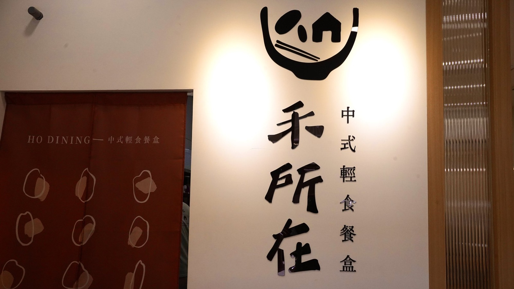

案例影像


禾所在以中式輕食餐盒為定位，希望讓健康餐不再只有雞胸肉，也能保留快炒、爆炒與鍋氣感。傑弗德主要負責料理研發，並參與賽道分析、食材、前置流程及動線規劃，透過智能設備與製程標準化，降低現場對專業師傅的依賴。

常見健康餐容易集中在雞胸肉與較單一的料理方式；品牌希望做出低油、低糖、較少負擔的餐盒，同時保留中式現炒風味，並讓現場不必依賴專業師傅也能穩定出餐。
以中式風味作為產品差異，導入去廚師化的智能設備，並從料理、食材、前置作業與動線同步設計，讓快炒與鍋氣感能被轉化為較低油糖、容易標準化的製程。
專案已形成「中式輕食餐盒」的清楚市場定位，產品不再侷限於常見雞胸健康餐。
01 ／ 案例背景
禾所在的名稱帶有台語「好所在」的諧音概念，公開定位為中式輕食餐盒，核心主張包含「美味，也能安心」、較少負擔的烹調方式與平衡風味。
02
表面上的需求是研發幾道具有中式風味的健康餐；真正要解決的，是快炒、爆炒與鍋氣感通常仰賴師傅經驗，如何在控制油糖的同時，把這些風味轉成一般現場人員也能穩定執行的產品與製程。
03
04
為什麼：健康餐若只等於雞胸肉與單一調味，產品容易缺少日常飲食的熟悉感與持續選擇的理由。
影響：以中式風味作為菜單差異，產品方向包含檸檬蒸魚、蔥爆豬肉等。
為什麼：快炒、爆炒與鍋氣感高度依賴師傅經驗，不利於人力安排與不同人員之間的出餐一致性。
影響：導入去廚師化的智能設備，讓現場不需依賴專業師傅，也能依設定呈現中式料理需要的風味與口感。
為什麼：健康定位不只來自食材名稱，也取決於實際用油、用糖與每次烹調能否維持相同標準。
影響：以較低油糖、容易標準化的方向設計料理與製程，讓不同現場人員能依共同方式完成產品。
為什麼：設備本身不能獨立解決營運問題，食材規格、前置準備與工作動線也會直接影響速度及品質。
影響：在料理研發之外，同步參與食材、前置流程與動線規劃，使智能設備與標準製程能真正進入現場營運。
05
06
以中式風味健康餐建立不同於常見雞胸餐盒的方向。
發展蒸魚、蔥爆豬肉等中式風味產品。
導入智能設備，整理低油、低糖及容易標準化的烹調方式。
配合產品規劃食材及前置作業。
讓設備、操作流程與人員工作方式能在實際場域中配合。
案例影像
07 ／ 成果
專案已形成「中式輕食餐盒」的清楚市場定位，讓健康餐不再侷限於常見雞胸產品，也把中式風味、智能設備與標準製程放進同一套營運方向。
以上為質性觀察與階段性成果說明，實際執行內容依合約範圍為準，不代表對特定營業額、獲利或回本時間的保證。
如果你正在準備開店、轉型，或發現原本有效的方法逐漸失去作用，我們可以先從釐清問題開始。